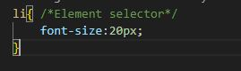
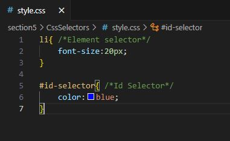
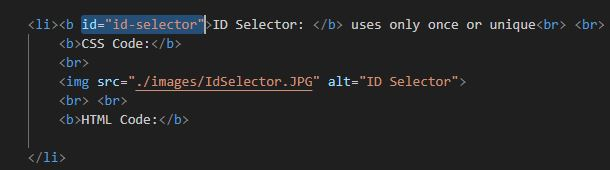
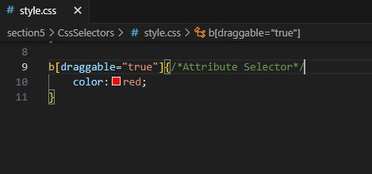
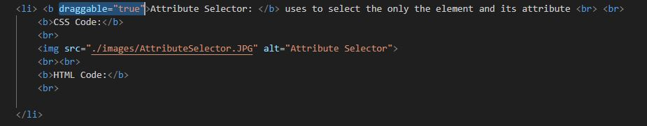
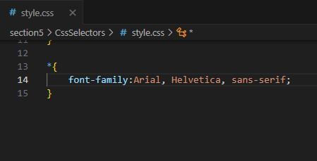

CSS Selectors
Types of CSS Selectors:
- Element selector: uses elements like h1, body.
CSS Code:

- ID Selector: uses only once or unique.
Note: ID Selector uses ID.
CSS Code:

HTML Code: Note: it use ID="id-selector" to call in html.

- Attribute Selector: uses to select the only the element and its attribute.
Note: Attribute Selector is draggable.
CSS Code:

HTML Code: Note:it use draggable="true to call in html.

- Universal Selector: uses to select all css of website.
Note: Universal Selector uses to font-family.
CSS Code:
